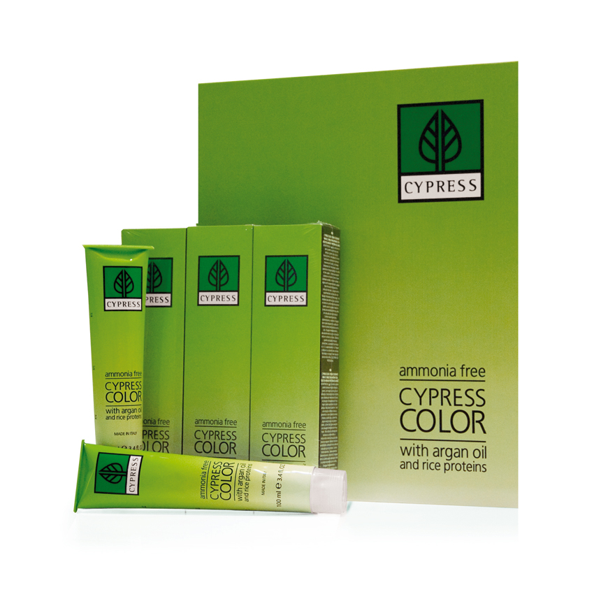

 |
CYPRESS COLORCYPRESS COLOR crema colorante para el cabello sin amoniaco con aceite de argán y proteínas de arroz. Una coloración con cero por ciento de amoniaco implica una coloración sin olores, una perfecta cobertura de cabellos blancos, y un brillo y duración de color importantes. Las proteínas de arroz aumentan la elasticidad del cabello, el aceite de argán, lo nutre aportando brillo y suavidad. Los pigmentos ultra puros usados garantizan un reflejo natural. Se incluyen ácidos lipofílicos de frutas (Vitaminas). Tubo de 100 ml, dispone de 29 tonos, se usan 1+1,5 y el poder aclarador es de 2-3 tonos. Los superaclarantes se usan 1+2 y el poder aclarador es de 3-4 tonos. Los fantasía son colores que no tienen poder aclarador, se usa 1+1,5 y se tienen que usar sobre cabellos decolorados. |